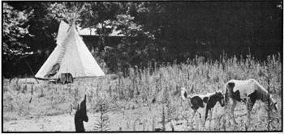
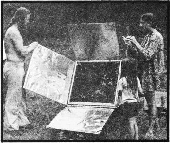
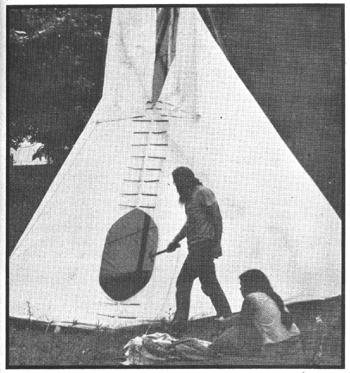
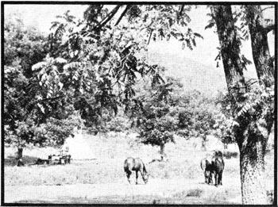

MOTHER has come a long way from her modest start way back in January of 1970 and so have many of her readers. (Remember the saying on the cover of the very first issue? "A new beginning.") When NO. 1 appeared I was teaching carpentry in the city, and some of the people in my classes showed an interest in domes, tipis, yurts, and country living. It wasn't long before MOTHER became one of our "textbooks".
Later-about two years ago-all the members of our present group left Oakland, California. One couple headed south to live by the beach in a waterproofed cardboard geodesic dome, while others went to Pennsylvania to try their hand at commercial mushroom growing. Meanwhile, my wife and daughter and I spent the summer visiting contacts made through MOTHER and finally settled in the Arkansas Ozarks, where we made a down payment on some wild land and began our struggle toward a satisfying livelihood in these beautiful but rugged woods.
Now our group is back together again, thanks to a 69-yearyoung stroke victim named Robert Eaton. Bob didn't relish the idea of spending his days in a rest home, and we needed larger working and living quarters so the deal was made, and his farm deep in the Ozark National Forest became home for us all. Robert is our resident old-timer-a good man to have around when homesteading questions come up-and we're his adopted family.
We've learned a lot from our attempts, experiments, successes, and failures here. Maybe some of our experiences will be an encouragement to others and MOTHER's readers might enjoy seeing how our doings-past and present parallel the changes and discoveries in the magazine. In fact, as we look over our pile of back issues, it isn't hard for us to see where our ideas came from.
For example remember the tipi article in MOTHER NO. 1? Well, our Pennsylvania mushroom growers found themselves faced with a housing shortage, so out came the tipi plans and up popped four Indian-style dwellings: two made from scratch and the other two ordered from Nomadics (Star Route, Box 41, Cloverdale, Oregon 97112). A bit of hindsight: All that experience with sewing canvas is useful, of course, but the store-bought Nomadics product is very fine and doesn't really cost much more than the home-grown variety.
Now that a number of us have built and lived in tipis, we have some additional information to offer anyone who plans to do the same.
First, the poles (in our case, Scotch pine, cedar, and white oak). We propped ours against a tree, left them to season for three weeks, and then protected them with Wood Life.
Our tipi covers were marine-treated Terrasol from Nomadics and 10- and 12-ounce cotton canvas from Sears the latter, coated with Sears' water repellent. Two applications are recommended. (We also tried Trailblazer silicone water repellent from Ward's and found that it caused discoloration and didn't cover as much area as claimed on the label.)
Two of the tipis we now have were stitched double, like blue jeans, and one was double-sewn flat, like the Nomadics products. Both ways are good but the flat stitching is easier.
About liners: muslin doesn't work. You need canvas, at least eight-ounce or heavier and be sure to treat the fabric. The Pennsylvania gang lost one inner cover from mildew because a rug lay on the liner's edge while the tipi was in use.
Our present floor is made of the material most readily available in the Ozarks rocks. Flat pieces laid like flagstone create a beautiful surface and keep ground moisture to a minimum.
Pitching a tipi means a lot of trial, error, and frustration, but don't give up or settle for less than a perfect job. We had to erect each of our shelters several times before we got it just FACING PAGE: At first glance, there's a timeless quality to this Ozarks community's tipis and grazing horses. TOP, LEFT: A closer look, however, reveals some modern touches such as the solar oven beside this shelter. TOP, RIGHT: The tipi is supported by interlocking poles, seen here from below. CENTER, LEFT TO RIGHT: A new pole is peeled with a drawknife, a tipi site is chosen, the lift pole (with cover) is maneuvered into place, and the canvas is laced together after being spread on the supports. BELOW, LEFT: At this point the cover has been pegged down but the smoke flaps have not yet been tied back. BELOW, RIGHT: The solar oven is shown here in close-up. right. And yes, the smoke really goes out the top, and the rain really runs down the poles like it's supposed to and the shadows really dance like magic on the cover.
Much of what needs to be said about tipis and tipi living can be found in an excellent book, The Indian Tipi by Reginald and Gladys Laubin ($1.65 as a Ballantine paperback, $6.95 in hard cover from the University of Oklahoma Press, and either is available from MOTHER'S Bookshelf). Add to the joys they describe the waking vision of the misty Ozark "hills and hollers" through the open door and you've set just the right mood for the day's work.
Finally, don't forget the transport rack mentioned in MOTHER NO. 1. Our tipis and poles have traveled thousands of miles on a wooden version bolted to our old car.
Another housing problem we solved with MOTHER's help came up about a year ago when our two nine-year-old nieces arrived to stay with us for a while. At that time my wife and daughter and I were living in a little rented house hardly big enough to squeeze into so we went to work and got a two-room addition built just in time to keep the seams (and our nerves) from popping.
MOTHER's advice on low-cost methods and materials enabled us to complete the project with scrounged windows, recycled wood, and a minimum cash outlay. In addition, we really made points with the owner which pleased us, since he was charging us only $10.00 a month in rent for the house, garden site, and pasture. Sound hard to believe? Well, the year before that we lived rent-free in a nice little place, in exchange for painting it. MOTHER told us such deals could be found, and she was right.
Then there was gardening, which began for us in Oakland when we read the HAVE-MORE Plan in MOTHER NO. 2 and decided to cultivate intensively a 20' X 20' patch behind our city home. Since then we've had beautiful plots in three states and, at present, work about half an acre. We've joined the newly formed Farmers Market co-op here and sell surplus produce in town (along with wild herbs like yarrow and mint, ferns my wife collects in the woods, and rocks and fossils I find in creek beds near our home).
Incidentally, we're also members of the Ozark Food Co-op where we get fresh, wholesome edibles and save at least 20 percent by buying directly from suppliers. That's one way to economize on food: by eliminating the middleman.
MOTHER NO. 3 was another beginning for us. Remember those first articles about methane? We thought the idea was great. Now we have an operating generator and plan to build a larger model to produce our own fuel a good solution to our homestead energy crisis. Then we tried our hands at the solar oven described in MOTHER NO. 25 and it works! The contraption actually turns out beans and bread and some really fine cookies, cakes, and pies. Our oven is made entirely from recycled parts and creates quite a contrast sitting next to a tipi.
MOM's livestock care articles also came in handy as we evolved from city dudes to horse people. Now, with our four mares recently bred, we have the beginnings of an enjoyable way to bring in cash. Besides raising and training horses and mules, my wife breaks and schools the critters for our neighbors.
Those are some of the successes but we've had our failures, too, and it may be helpful to describe them. Our first disappointment was communal living. We found that sharing was a joy, and it still is but not when it's set up as a system. After a year of that experiment we've decided well continue to cooperate and use the workshop in common, but each family will have its own hearth and home. In the process of making this decision we lost two couples who would probably have stayed if we hadn't gone communal.
Another flop was our search for inexpensive land. Cheap acreage exists, yes but good, usable low-cost property is impossible to find. And back-tax bargains are a thing of the past. We know we put money on a farm at a sheriff's sale and lost it when the previous owner finally paid up. Our advice: Buy a good homestead' site at a fair price and make sure the title is clear. Avoid the long shots by all means. And get your place soon, before prices rise any higher. One year's worth of inflation can eat up all the money you save in that time.
Our group's mushroom enterprise also turned out badly. In fact, the year we made our attempt was a disaster for the whole industry, with material and supply costs soaring and the bottom falling out of the crop price. Many established businesses went bankrupt and three of the families with us lost everything.
In general, though, earning money in the country was more a disappointment than a failure. After a very frustrating year of biting off more than we could chew, we've come to the realization that it's almost impossible to develop property, build a home, raise a family, make land payments, and earn a living too. In our two years in the Ozarks, my wife and I have watched over half the newcomers leave because of the same problem: too much to do and too little time or money to do with. The economics of country living was a rough lesson to learn and almost drove us back to the city.
Our next project-now that we're on a more even keel-is Environmental Design: a cooperative living and working arrangement among five families with very different skills and abilities. The products we make-hand weaving, pottery, wooden articles, and split oak baskets-are all sold by mail order. E.D. is also the regional contact for alternative energy projects, in collaboration with the folks who put out Alternative Sources of Energy (Rt. 2, Box 90A, Milaca, Minnesota 56353, $5.00 for six issues). In addition, our group provides low-cost, personalized assistance to homebuilders by acting as architectural and engineering and design consultants.
Yes, we've come a long way no doubt about that. No doubt, either, that MOTHER was on the right track when she gave us that first "how to" on tipis and many other new beginnings.
|
 |
 |
 |
|
 |
|
|